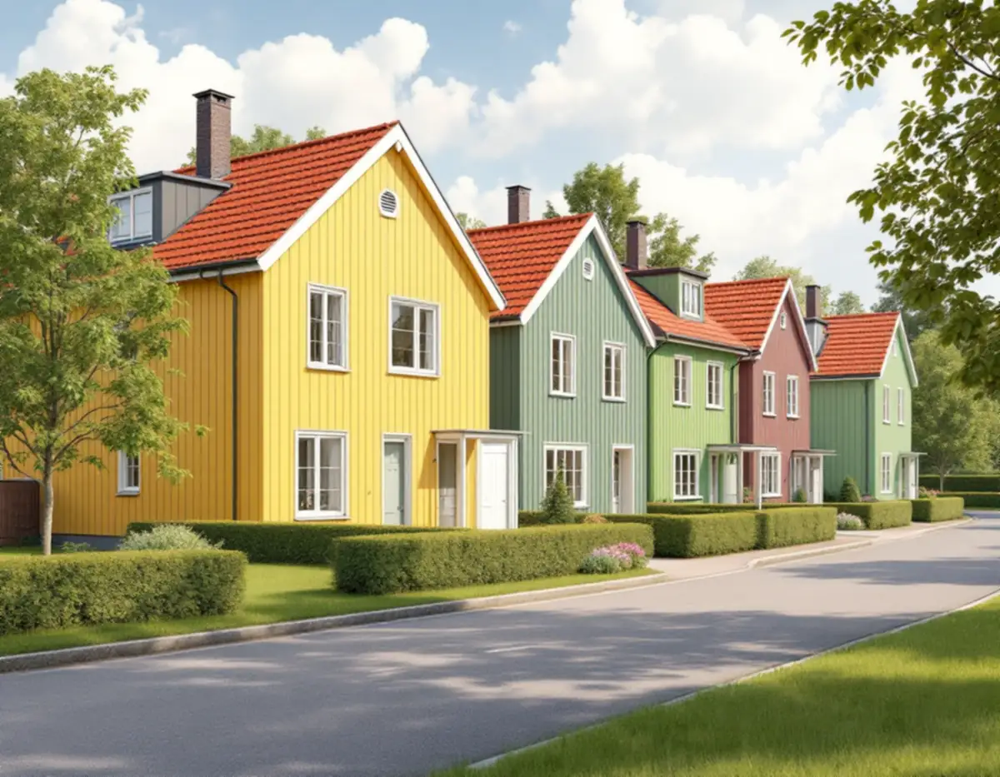
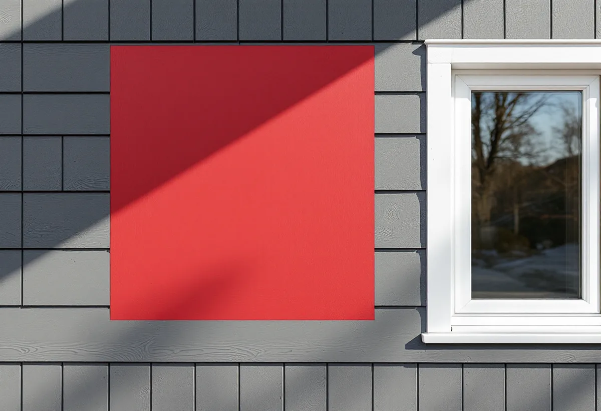

Platsbesök
Vi tittar på panel, foder och grund och tar reda på vilken färgtyp som sitter där.
I Täbys grupphusområden är det sällan ett enskilt hus som bestämmer kulören. Kvarteret har en färg, grannkvarteret en annan, och det är helheten kommunen vill bevara. Geal Entreprenad AB målar fasader på villor, kedjehus och radhus i Täby och tar fram kulören tillsammans med dig innan arbetet börjar.

Kommunens kulturmiljöunderlag Kulturmiljöer i Täby berättar att ett av landets första kedjehusområden började byggas i Ella gård 1955, bara ett år efter att jordbruket upphörde. Totalt byggdes 500 hus under en femtonårsperiod. Husen var prefabricerade, byggdes på betongplatta och kännetecknas av sadeltak med tegelpannor, stående träpanel och vitmålade smala fönsterfoder. De ursprungliga takkuporna ramas in av svarta plåtavtäckningar, och de olika kvarteren har olika fasadkulörer.
Riktlinjerna för Ella gård säger att den ursprungliga färgsättningen ska vara vägledande för all bebyggelse i området. Vissa nyansskillnader behöver accepteras, men inte avvikande kulörvarianter, och även färgen på betydande trä- och plåtdetaljer bör anpassas efter områdets karaktär. På kommunens sida om grupphusområden står att Ella gårds bebyggelsegrupper har fasader som kan vara röda, gula, gröna eller grå.

Erikslund byggdes 1972–1973 som ett enhetligt grupphusområde med över 300 bostäder. Parhusen har två våningar, flacka tak och fasader i täckmålad lockpanel med vita, horisontella skivtäckta fält över fönstren. Kommunens råd är att behålla de olika kvarterens enhetliga färgsättning och renovera med material lika de ursprungliga. Vallatorp från slutet av 1970-talet präglas enligt underlaget av att grupperna av hus har varsin färgsättning men ett samstämmigt formspråk.
De generella riktlinjerna för grupphusområden säger att ursprunglig färgsättning ska behållas och att tillägg som carport och altan ska undvika stora kontraster i material och färg. Riktlinjerna gäller för alla grupphusområden som tas upp i underlaget, oavsett hur området beskrivs. Kommunen visar också ett grupphusområde i Byle med stor variation i färgsättningen, så det finns ingen gemensam Täbykulör – det är det egna kvarteret som är måttstocken.
I underlagets råd till husägare står att man bör måla upp en stor yta med den tänkta färgen innan ommålningen. Hur färgen ser ut påverkas av färgerna runtomkring, av ytans grovlek och av om väggen ligger i sol eller skugga. Titta på provet och se om det passar både huset och grannhusen. Fasad, fönsterfoder, fönstersnickerier och grund har ofta olika kulörer, och kommunen råder att pröva att de fungerar tillsammans.
Flagnar den täckmålade panelen på ett hus från 1970-talet kan färgtypen vara orsaken. Boverket skriver att akrylatfärg är en tät plastfärg som kräver grundfärg av alkydolja, och att panelen fuktades upp kraftigt av regn när grunden inte användes. Länsstyrelsernas blad om målning på trä nämner flagor, sprickor och blåsor som tecken på plastfärg eller alkydoljefärg. Därför provar vi lagren innan vi föreslår färg, och vid lagning med nya brädor målar vi i samma kulör som resten av väggen.
Täby kommun skriver att fasadändringar på en- och tvåbostadshus inte kräver bygglov om byggnaden inte är särskilt värdefull, inte ligger i ett särskilt värdefullt område och inte har utökad lovplikt i detaljplanen. Är du osäker kan du kontakta kommunen för rådgivning. Ella gård beskrivs i underlaget som en värdefull kulturmiljö, så där är det värt att fråga innan en ny kulör beställs.
Underlaget råder också att ta fram ritningar på huset och kontakta kommunen för äldre ritningar, eftersom många hus har byggts till. Om kedjehusen i kvarteret Kammaren och de putsade villorna i Näsbypark kan du läsa under målare i Täby, om tegel och panel under fasadrenovering i Täby och om färgtyper i stort under målare.
Vi tittar på panel, foder och grund och tar reda på vilken färgtyp som sitter där.
Vi jämför med grannhusen och kommunens riktlinjer för området.
En stor provyta på fasaden, med foder och grund i sina kulörer.
Förarbete, färg, antal strykningar och ROT-avdrag specificeras.
Tvätt, skrapning, grundning av bart trä och strykning i torrt väder.
Vi går runt huset med dig och städar upp.
Skatteverket ger rotavdrag för målning och rengöring av fasader på småhus, och för montering och nedmontering av byggnadsställningar. Är kedjehuset eller radhuset en bostadsrätt ger fasadarbetet inget avdrag, eftersom det räknas som arbete på gemensamma ytor.
Avdraget är 30 procent av arbetskostnaden, högst 50 000 kr per person och år och högst 75 000 kr tillsammans med rutavdrag. Färg, material och resor ger inget avdrag.
Fasadens storlek, hur mycket gammal färg som släpper, om brädor behöver bytas och hur många detaljer som ska ha egen kulör styr mest. Efter ett kostnadsfritt platsbesök får du ett skriftligt kostnadsförslag.
Fasad, fönster och invändig målning.
Målare i Stockholm →Takbyte, takbesiktning och plåtarbeten.
Takläggare i Täby →Näsbypark, Viggbyholm och Gribbylund.
Takrenovering i Täby →Detaljplan, Q-märkning och VA-inkoppling.
Attefallshus i Täby →Radhuslängor, villor och nya gästhus.
Badrumsrenovering i Täby →Tillbyggnad, gästhus och renovering.
Byggföretag i Täby →Tegelvillor, kedjehus och grupphus i Täby.
Fasadrenovering i Täby →Villastäder och grupphus i Täby.
Fönsterbyte i Täby →Gårdarnas fönster, kulör och spröjs.
Fönsterrenovering i Täby →Villor, radhus och kedjehus från 1970- och 80-talen.
Golvläggare i Täby →Laga och slipa golvet efter en riven vägg.
Golvslipning i Täby →Grupphus, radhus och villor vid banan.
Köksrenovering i Täby →Trävillor, puts och kedjehus i Täby.
Målare i Täby →Stationsvillor, funkis och grupphus i Täby.
Plåtslagare i Täby →Verandor, fönster och carport.
Snickare i Täby →Betongpannor, kedjehus och tegelvillor.
Takbyte i Täby →Ny tapet mot lister och foder.
Tapetsering i Täby →Byle, kyrkbyn och detaljplanen.
Tillbyggnad i Täby →Ett hus som går att bo kvar i.
Totalrenovering i Täby →